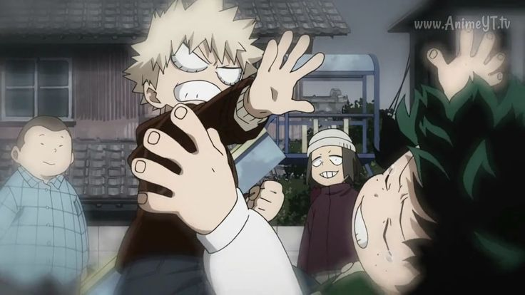
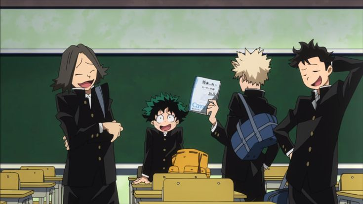

В последние недели имя Кацуки Бакуго, занимающего первое место в рейтинге профессиональных героев, неоднократно появлялось в СМИ в связи с его взаимоотношениями с журналистом Мидорией Изуку.
Однако недавно в наше распоряжение попали материалы, проливающие свет на совершенно другую сторону прошлого Бакуго. Речь идёт о событиях десятилетней давности, а именно о школьных годах героя.
Согласно школьным архивам, Бакуго и Мидория учились в одном классе на протяжении нескольких лет. Они также росли в одном районе и знали друг друга ещё до поступления в младшую школу.
Однако особенно примечательно другое.
Несколько бывших одноклассников независимо друг от друга подтвердили: отношения между ними в детстве были крайне напряжёнными.
«Бакуго всегда был очень популярным. Все знали, что у него невероятно сильная причуда и что он собирается стать героем. Мидория был полной противоположностью.»
По словам нескольких свидетелей, Мидория, будучи беспричудным ребёнком, регулярно становился объектом насмешек со стороны Бакуго и его окружения.

Именно тогда, согласно свидетельствам бывших одноклассников, Бакуго начал использовать в отношении Мидории прозвище «Деку».
Само по себе прозвище могло бы показаться обычной детской дразнилкой, однако свидетели утверждают, что за ним стояло другое отношение.
«Это никогда не звучало как дружеское прозвище.»
«Когда Бакуго говорил "Деку", все знали, что он хочет унизить его, хоть и молчали.»
«Мидория практически никогда не отвечал на его выпады.»
Это не ограничивалось словами.
В распоряжении редакции оказались фотографии и записи, сделанные в школьные годы.
Несколько бывших одноклассников утверждают, что Бакуго неоднократно намеренно использовал свою причуду рядом с Мидорией, несмотря на то, что тот не обладал способностью защищаться.
«Он мог взорвать парту рядом с ним просто потому, что Мидория его раздражал.»
«Бакуго постоянно говорил ему, что он никогда не станет героем.»
Наиболее серьёзное свидетельство касается инцидента, произошедшего незадолго до окончания средней школы.
По словам нескольких свидетелей, Бакуго сказал Мидории, что если тот действительно хочет стать героем, ему следует «прыгнуть с крыши» и надеяться на причуду в следующей жизни.
Это главный вопрос, который возникает после изучения материалов.
Мидория Изуку сегодня — один из наиболее известных независимых журналистов страны.
Он неоднократно расследовал деятельность Геройской Комиссии, нарушения со стороны профессиональных героев и случаи дискриминации людей с определёнными типами причуд. Он известен как человек, склонный не закрывать глаза на злоупотребления властью.
Тем не менее именно Мидория взял интервью у Бакуго.
Более того, во время интервью между ними была заметна необычная степень взаимного доверия, которую уже успели заметить зрители по всему миру.
Знал ли Мидория о том, что его собеседник является тем самым человеком из его детства?
Разумеется. И именно это делает их нынешние отношения ещё более непонятными.
Кацуки Бакуго занимает первое место в рейтинге профессиональных героев.
Он является лицом нескольких крупных компаний, регулярно появляется в рекламе и считается одним из наиболее перспективных героев своего поколения.
За последние десять лет он практически не комментировал своё прошлое. Ни в одном из доступных публичных интервью Бакуго не рассказывал о своих отношениях с Мидорией в школьные годы.
Возможно, Кацуки Бакуго действительно изменился.
Возможно, человек, которым он был в четырнадцать лет, не имеет ничего общего с героем, которым он стал сейчас.

Но тогда возникает другой вопрос:
Почему человек, которого он когда-то так сильно унижал, сегодня оказался одним из немногих людей, готовых публично встать рядом с ним?